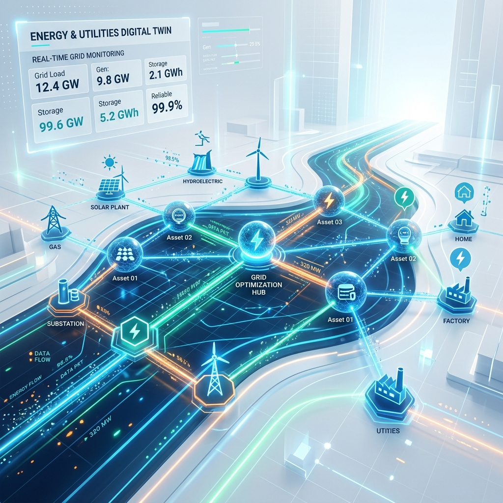
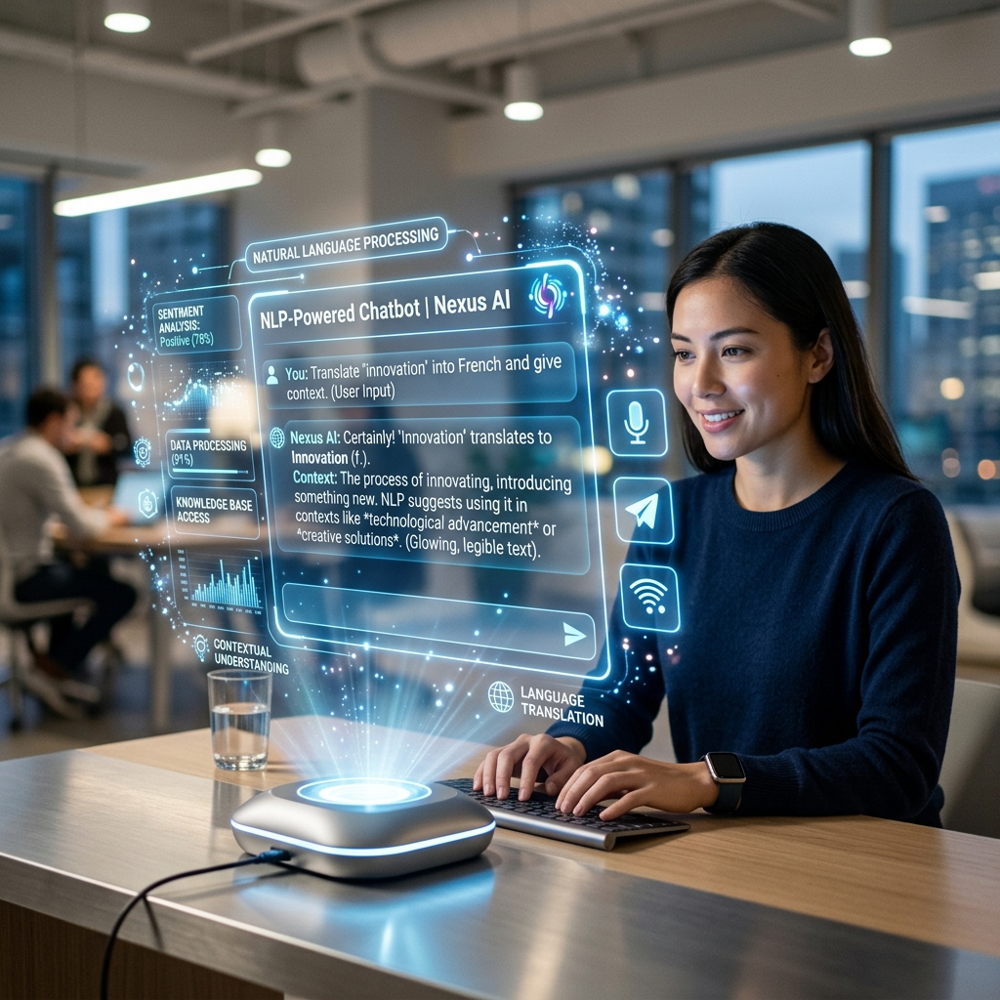
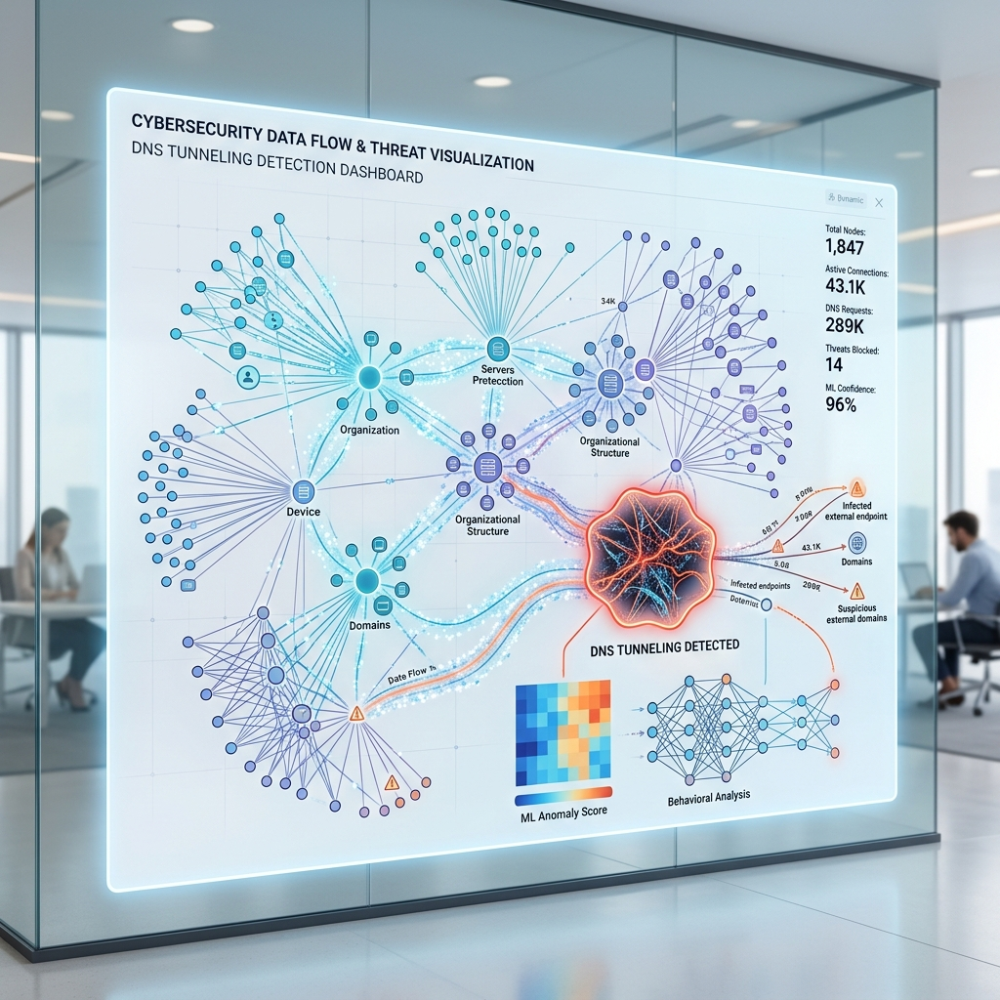
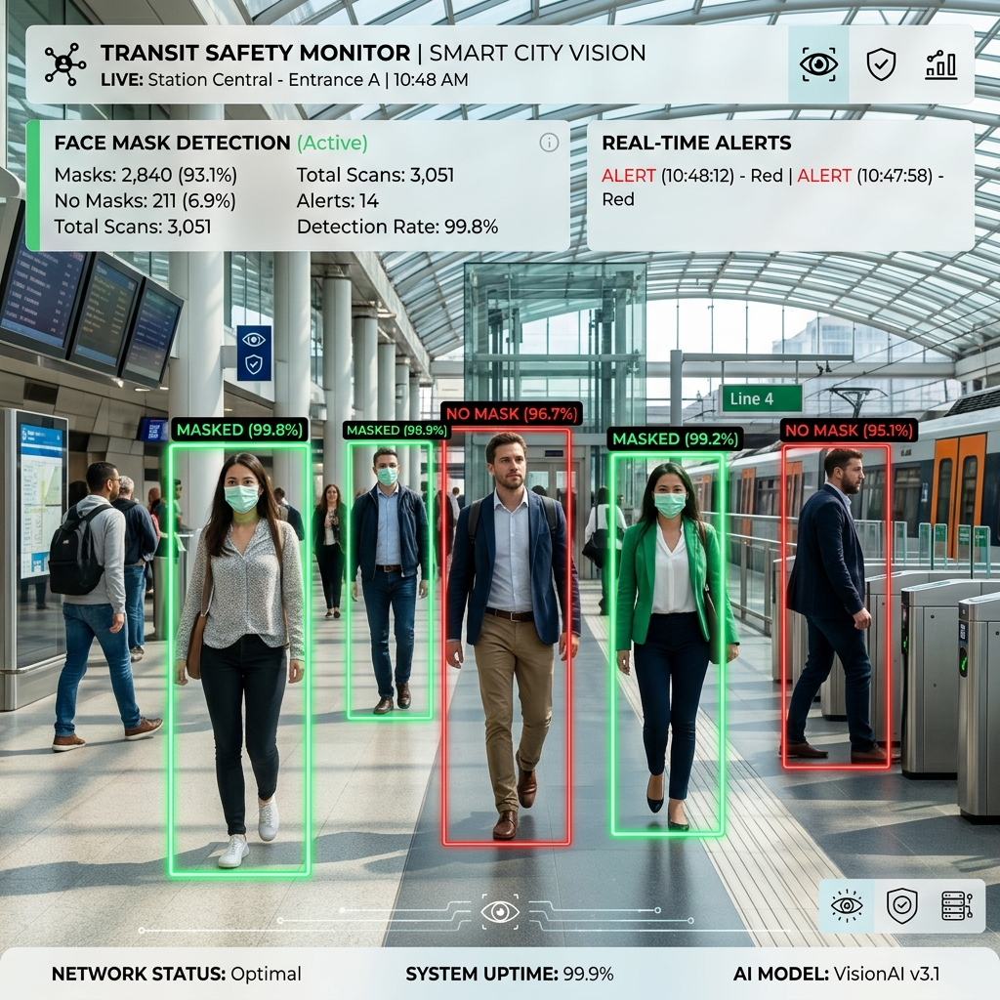
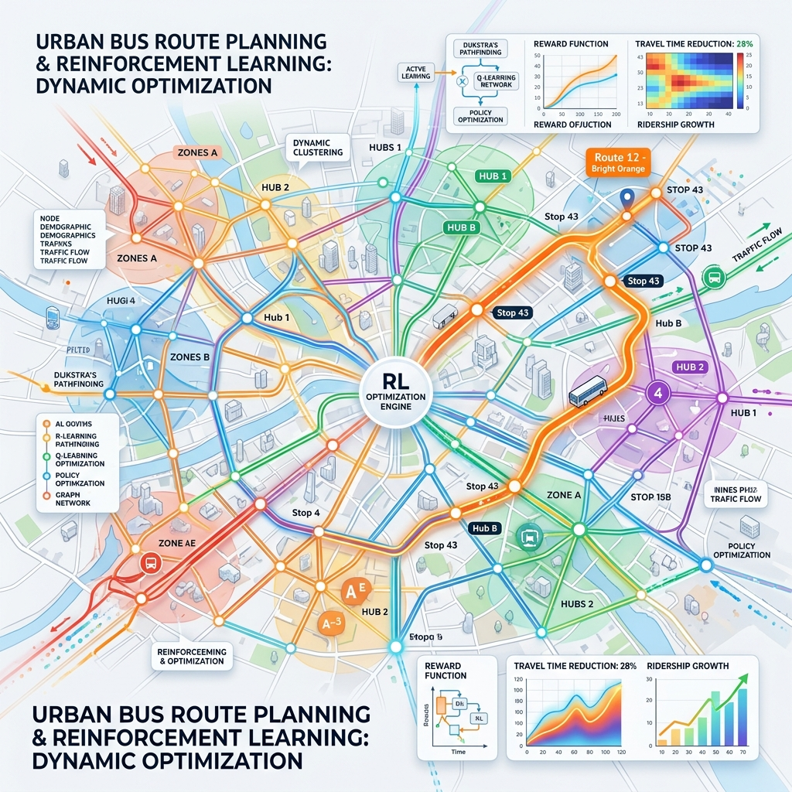
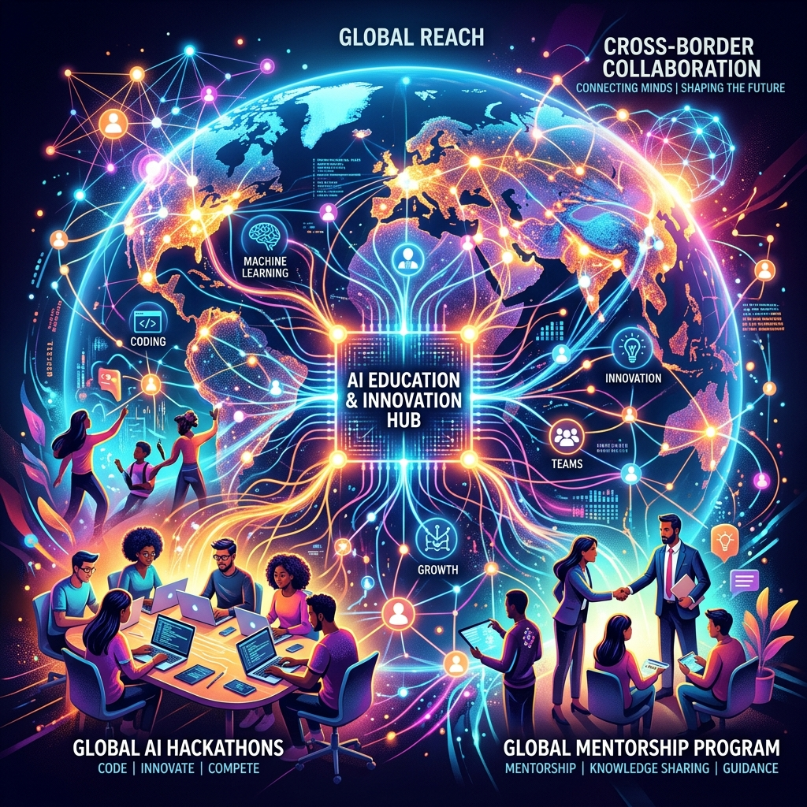
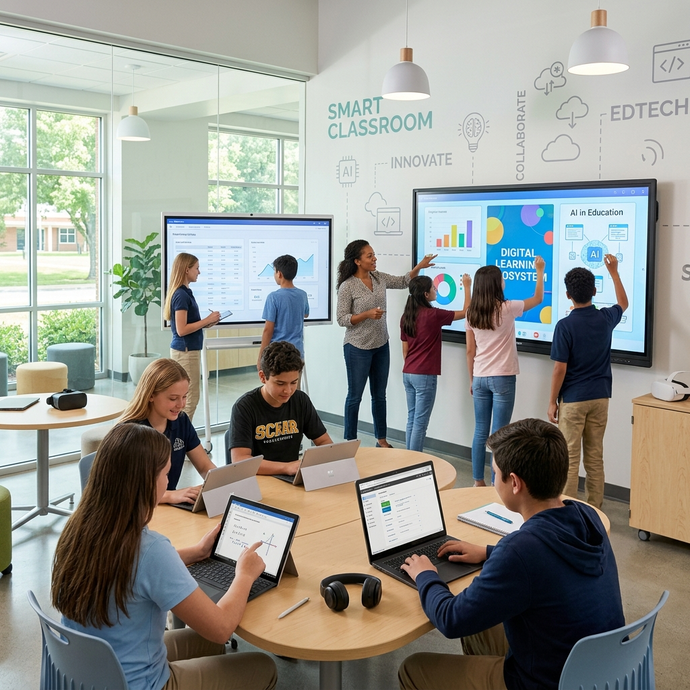

Executive Summary
I am an AI Specialist and Data Science Manager dedicated to designing and operationalizing production-grade AI systems. My expertise lies in architecting scalable, high-performance machine learning solutions that solve complex enterprise challenges and deliver measurable impact.
From spearheading enterprise digital twins to managing a 40 DGX A100 AI center and leading cross-functional teams of specialized AI engineers, I deliver strategic value through technology.
16+
Years Experience
11
AI Engineers Managed
99.8%
PhD Model Accuracy
40+
A100 GPUs Orchestrated
The Story Chronicle
A timeline of my professional journey and academic achievements.
PhD in Artificial Intelligence
Universiti Teknikal Malaysia Melaka (UTeM)
Developed a payload-agnostic hybrid GA-RF model for DNS Tunneling Detection. Reduced feature space to 10 features while achieving 99.84% accuracy and a 53% decrease in training time.
Senior Data Scientist
Sand Technologies (US Remote)
Engineered core machine learning algorithms for a versatile digital twin solution in the energy sector. Spearheaded POC projects translating high-level objectives into production-ready predictive models.
NLP Consultant
Confidential (KSA Remote)
Built and refined LLMs and RAG systems for complex government challenges. Pioneered holographic chatbots and conducted deep benchmarking on CUDA and LangChain.
Session Lead & AI Mentor
Udacity (SPARK Project / Google Palestine Launchpad)
Mentored over 300 students globally, delivering hands-on training content in data preprocessing, deep learning, and algorithm design. Fostered the next generation of AI engineers.
Head of AI Engineering Bachelor Program
UCAS
Pioneered and led the first-ever Artificial Intelligence Bachelor Engineering Program in Gaza. Designed the curriculum, mentored students, and established the foundational academic framework for future AI engineers in the region.
Partner & AI Lead
Act Hub (Palestine)
Spearheaded enterprise AI operations, developing predictive models and leading intensive AI training programs for 30+ aspiring data scientists.
Senior AI Programmer & AI Lead
AVRIOC (Abu Dhabi)
Directed a cross-functional agile team of 11 AI specialists. Orchestrated large-scale AI training by managing a 40+ NVIDIA DGX A100 GPU AI Center to support large-scale, mission-critical research and development.
AI Specialist
Roads & Transportation Authority (Dubai)
Engineered graph-based clustering optimization for bus route planning and led RL simulation projects to reduce urban congestion by 40-60%.
Machine Learning Engineer & Master's Researcher
UKM & Global Projects (Malaysia)
Implemented large-scale Hadoop/MapReduce solutions for NLP applications. Conducted deep research at the National University of Malaysia (UKM) focusing on predictive modeling and advanced system architectures.
Head of IT & Digital Transformation Lead
Al Wahda Private School (UAE)
Led early digital transformation initiatives by integrating smart classrooms and interactive tech displays. Trained senior teachers to adapt to new technologies, significantly improving educational quality and operational efficiency.
Featured Projects
Visualizing innovation across energy, NLP, and cybersecurity.

Digital Twin Architecture
A scalable AI framework enabling real-time monitoring and predictive analytics for the energy and utilities sector.

Holographic AI Assistant
Pioneered the development of next-gen interactive chatbots utilizing advanced LLMs and RAG architectures.

DNS Tunneling Detection
Hybrid GA-RF model mapping cybersecurity data flows to detect and block malicious payloads with 99.8% accuracy.

Transit Face Mask Detection
Deployed advanced computer vision models to detect passenger mask compliance across high-density transit environments for RTA Dubai.

Urban Mobility Optimization
Engineered graph-based clustering and Reinforcement Learning simulations to optimize bus routes, reducing urban congestion by 40-60%.

Google SPARK AI Initiative
Led mentorship and technical training for global AI hackathons under the Palestine Launchpad with Google, shaping the next generation of engineers.

Educational Digital Transformation
Pioneered smart classroom integration and technology adaptation programs, transforming traditional teaching methods through seamless hardware/software deployment.
Academic, Awards & Volunteering
🎓 Education & Awards
Doctor of Philosophy (PhD) in Artificial Intelligence
Universiti Teknikal Malaysia Melaka (UTeM) | Expected 2026Dissertation: Enhanced Feature Engineering and Advanced Random Forest with Genetic Algorithm for DNS Tunneling Detection. Developed a payload-agnostic hybrid GA-RF model achieving 99.84% accuracy.
Masters in Artificial Intelligence
National University of Malaysia (UKM)Focused on advanced AI concepts, predictive modeling, and system architectures.
🏆 Academic & Research Excellence Awards
MalaysiaRecipient of the prestigious Malaysian International Scholarship (Ministry of Higher Education) and the UTeM ZAMALAH Fellowship for outstanding AI research contributions.
📚 Research & Community
Selected Academic Publications
- DNS Tunnelling: A review of features & Comparative Analysis using ML.
- Agglomerative hierarchical clustering for ozone and climate change patterns in Malaysia.
- KLANG VALLEY rainfall forecasting model using time series data mining.
- Data dissemination-based clustering techniques for VANETs.
- Spoken language identification based on extreme learning machine approach.
🤝 Community Volunteering
Al-Utrujjah Center for Quran Memorization (مركز الأترجة): Volunteered in Ajman, UAE to install and maintain critical IT infrastructure including Wi-Fi networks, computers, and educational projectors to support community learning.